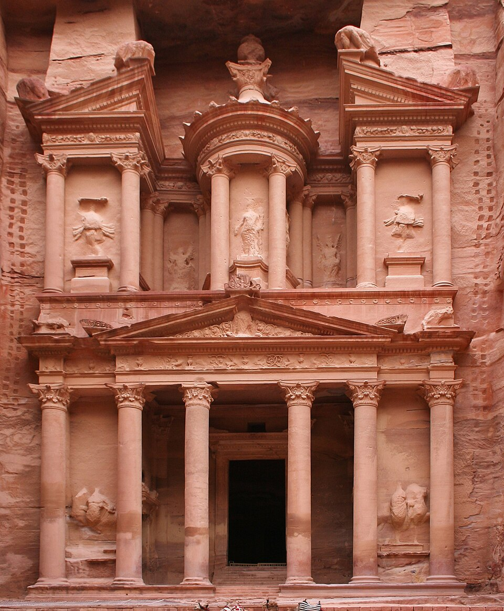

Petra is an ancient archaeological city in southern Jordan, famous for its stunning buildings carved into pink sandstone cliffs.Built by the Nabataeans over 2,000 years ago, it was an important trading center and is now one of the New Seven Wonders of the World and a UNESCO World Heritage Site.
